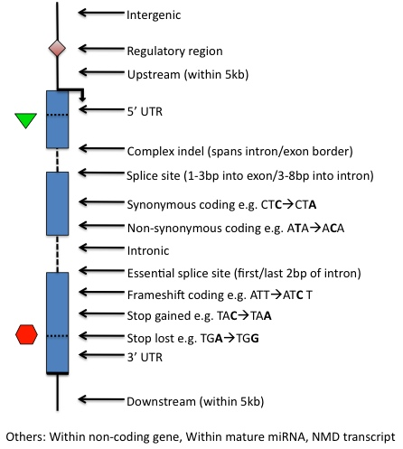

About Ensembl Variation |
Data Description |
Predicted Data |
Database Description |
Perl API |
Variant Effect Predictor

Page content:
Ensembl Variation - Predicted data
Ensembl imports variation data from a variety of different sources, as
described on the Data description page. Below we give more
information about how Ensembl predicts the effects of variants. Ensembl calculates the:

|
- Consequence of variations in transcripts (synonymous, missense,...), e.g.
rs699
- Protein function prediction (SIFT, PolyPhen), e.g.
rs56404215
|

|
- Linkage disequilibrium information, e.g.
rs1333049
- Tagged variations
|
Calculated variation consequences
For each variation that is mapped to the reference genome, we identify each
Ensembl transcript that overlap the variation. We then use a rule-based approach to
predict the effects that each allele of the variation may have on the transcript.
The set of consequence terms, defined by the Sequence Ontology (SO), that can be
currently assigned to each combination of an allele and a transcript is shown
in the table below. Note that each allele of each variation may have a different
effect in different transcripts.
This approach is applied to all germline variations and somatic mutations
stored in the Ensembl variation databases (though we do not yet currently calculate
consequences for structural variants). The resulting consequence type calls,
along with information determined as part of the process, such as the cDNA and
CDS coordinates, and the affected codons and amino acids in coding transcripts,
are stored in the variation database and displayed on the website. You can use
this pipeline for your own data via the VEP.
Prior to release 68 we used our own internal terms to describe consequence
types and these continue to be available as an option on the website using
'Configure this page', in the API and in the VEP. We refer
to these as 'Old Ensembl terms' and list these and their SO equivalents in
the table below.
From release 68 however, we use SO terms by default. There is an equivalent
SO term for each of our old Ensembl terms but in a few cases there is a more specific
SO term available, as shown in the table below. If you have text files or VEP outputs
with our old Ensembl terms, you can easily update these to using the SO terms by running the following
script e.g.
perl convert_ensembl_to_SO_consequences.pl input.txt > converted.txt
The terms in the table are shown in order of severity as estimated by
Ensembl, and this ordering is used on the website summary views. This ordering
is necessarily subjective and API and VEP users can always get the full set of
consequences for each allele and make their own severity judgement.
See below a diagram showing the location of each display
term relative to the transcript structure:

| * |
SO term |
SO description |
SO accession |
Old Ensembl term |
| transcript_ablation |
A feature ablation whereby the deleted region includes a transcript feature |
SO:0001893 |
Transcript ablation |
| splice_donor_variant |
A splice variant that changes the 2 base region at the 5' end of an intron |
SO:0001575 |
Essential splice site |
| splice_acceptor_variant |
A splice variant that changes the 2 base region at the 3' end of an intron |
SO:0001574 |
| stop_gained |
A sequence variant whereby at least one base of a codon is changed, resulting in a premature stop codon, leading to a shortened transcript |
SO:0001587 |
Stop gained |
| frameshift_variant |
A sequence variant which causes a disruption of the translational reading frame, because the number of nucleotides inserted or deleted is not a multiple of three |
SO:0001589 |
Frameshift coding |
| stop_lost |
A sequence variant where at least one base of the terminator codon (stop) is changed, resulting in an elongated transcript |
SO:0001578 |
Stop lost |
| initiator_codon_variant |
A codon variant that changes at least one base of the first codon of a transcript |
SO:0001582 |
Non synonymous coding |
| inframe_insertion |
An inframe non synonymous variant that inserts bases into in the coding sequence |
SO:0001821 |
| inframe_deletion |
An inframe non synonymous variant that deletes bases from the coding sequence |
SO:0001822 |
| missense_variant |
A sequence variant, that changes one or more bases, resulting in a different amino acid sequence but where the length is preserved |
SO:0001583 |
| transcript_amplification |
A feature amplification of a region containing a transcript |
SO:0001889 |
Transcript amplification |
| splice_region_variant |
A sequence variant in which a change has occurred within the region of the splice site, either within 1-3 bases of the exon or 3-8 bases of the intron |
SO:0001630 |
Splice site |
| incomplete_terminal_codon_variant |
A sequence variant where at least one base of the final codon of an incompletely annotated transcript is changed |
SO:0001626 |
Partial codon |
| synonymous_variant |
A sequence variant where there is no resulting change to the encoded amino acid |
SO:0001819 |
Synonymous coding |
| stop_retained_variant |
A sequence variant where at least one base in the terminator codon is changed, but the terminator remains |
SO:0001567 |
| coding_sequence_variant |
A sequence variant that changes the coding sequence |
SO:0001580 |
Coding unknown |
| mature_miRNA_variant |
A transcript variant located with the sequence of the mature miRNA |
SO:0001620 |
Within mature miRNA |
| 5_prime_UTR_variant |
A UTR variant of the 5' UTR |
SO:0001623 |
5prime UTR |
| 3_prime_UTR_variant |
A UTR variant of the 3' UTR |
SO:0001624 |
3prime UTR |
| intron_variant |
A transcript variant occurring within an intron |
SO:0001627 |
Intronic |
| NMD_transcript_variant |
A variant in a transcript that is the target of NMD |
SO:0001621 |
NMD transcript |
| non_coding_exon_variant |
A sequence variant that changes non-coding exon sequence |
SO:0001792 |
Within non coding gene |
| nc_transcript_variant |
A transcript variant of a non coding RNA |
SO:0001619 |
| upstream_gene_variant |
A sequence variant located 5' of a gene |
SO:0001631 |
Upstream |
| downstream_gene_variant |
A sequence variant located 3' of a gene |
SO:0001632 |
Downstream |
| TFBS_ablation |
A feature ablation whereby the deleted region includes a transcription factor binding site |
SO:0001895 |
Tfbs ablation |
| TFBS_amplification |
A feature amplification of a region containing a transcription factor binding site |
SO:0001892 |
Tfbs amplification |
| TF_binding_site_variant |
A sequence variant located within a transcription factor binding site |
SO:0001782 |
Regulatory region |
| regulatory_region_variant |
A sequence variant located within a regulatory region |
SO:0001566 |
| regulatory_region_ablation |
A feature ablation whereby the deleted region includes a regulatory region |
SO:0001894 |
Regulatory region ablation |
| regulatory_region_amplification |
A feature amplification of a region containing a regulatory region |
SO:0001891 |
Regulatory region amplification |
| feature_elongation |
A sequence variant that causes the extension of a genomic feature, with regard to the reference sequence |
SO:0001907 |
Feature elongation |
| feature_truncation |
A sequence variant that causes the reduction of a genomic feature, with regard to the reference sequence |
SO:0001906 |
Feature truncation |
| intergenic_variant |
A sequence variant located in the intergenic region, between genes |
SO:0001628 |
Intergenic |
* Corresponding colours for the Ensembl web displays.
Protein function predictions
For human mutations that are predicted to result in an amino acid substitution we also
provide SIFT and PolyPhen predictions for the effect of this substitution on
protein function. We compute the predictions for each of these tools for all possible
single amino acid substitutions in the Ensembl human proteome. This means we can provide
predictions for novel mutations for VEP and API users. We were able to compute predictions
from at least one tool for over 95% of the proteins in Ensembl. We also use the Condel tool
to provide a consensus prediction based on the SIFT and PolyPhen prediction scores.
These tools are developed by external groups and we provide a brief explanation of
the approach each takes below, and how we run it in Ensembl. For much more detail
please see the representative papers listed below, and the
relevant publications available on each tool's website. We hope to be able to provide
protein function predictions for species other than human in future releases.
SIFT
SIFT predicts whether an amino acid
substitution is likely to affect protein function based on sequence homology and the
physico-chemical similarity between the alternate amino acids. The data we provide for each amino
acid substitution is a score and a qualitative prediction (either 'tolerated' or 'deleterious').
The score is the normalized probability that the amino acid change is
tolerated so scores nearer 0 are more likely to be deleterious.
The qualitative prediction is derived from this score such that substitutions with
a score < 0.05 are called 'deleterious' and all others are called 'tolerated'.
We ran SIFT version 4.0.5 following the instructions from the authors and used SIFT
to choose homologous proteins rather than supplying them ourselves. We used all
protein sequences available from UniProtKB (release 2012_01, both the SwissProt and TrEMBL sets) as
the protein database.
PolyPhen
PolyPhen-2 predicts
the effect of an amino acid substitution on the structure and function of a protein
using sequence homology, Pfam annotations, 3D structures from PDB where available, and
a number of other databases and tools (including DSSP, ncoils etc.). As with SIFT, for each amino
acid substitution where we have been able to calculate a prediction, we provide both a
qualitative prediction (one of 'probably damaging', 'possibly damaging', 'benign'
or 'unknown') and a score. The PolyPhen score represents the probability that a substitution
is damaging, so values nearer 1 are more confidently predicted to be deleterious (note
that this the opposite to SIFT). The qualitative prediction is based on the False
Positive Rate of the classifier model used to make the predictions.
We ran PolyPhen-2 version 2.2.2 (available
here)
and again we followed all instructions from the authors, and used the UniProtKB
UniRef100 (release 2011_12) non-redundant protein set as the protein database, which was downloaded,
along with PDB structures, and annotations from Pfam and DSSP(snapshot 03-Jan-2012) in February 2012. When
computing the predictions we store results for the classifier models trained on the HumDiv
and HumVar datasets. Both result sets are available through the variation API which defaults to HumVar if no selection is made.
(Please refer to the PolyPhen website or publications for more details of the classification system).
Condel
Condel is
a general method for calculating a consensus prediction from the output of tools
designed to predict the effect of an amino acid substitution. It does so by calculating
a weighted average score (WAS) of the scores of each component method. The Condel authors
provided us with a version specialised for finding a consensus between SIFT and
PolyPhen and we integrated this into a Variation Effect Predictor (VEP)
plugin.
Tests run by the authors
on the HumVar dataset (a test set curated by the PolyPhen team), show that Condel
can improve both the sensitivity and specificity of predictions compared to either
SIFT or PolyPhen used alone (please contact the authors for details). The Condel
score, along with a qualitative prediction (one of 'neutral' or 'deleterious'),
are available in the VEP plugin. The Condel score is the consensus probability
that a substitution is deleterious, so values nearer 1 are predicted with greater
confidence to affect protein function.
The SIFT and PolyPhen predictions are precomputed and stored in the variation
databases and predictions are accessible in the variation API by using the sift_prediction,
sift_score, polyphen_prediction and polyphen_score methods on a
Bio::EnsEMBL::Variation::TranscriptVariationAllele object. For users wanting
to access the complete set of predictions from the MySQL database or API, an explanation of
the format used is provided here.
The predictions and associated scores are stored as a matrix, with a column for
each possible alternate amino acid and a row for each position in the translation. Each prediction
for a position and amino acid is stored as a 2-byte value which encodes both the qualitative
prediction and score encoded as described below. A simple example matrix is shown in the figure
below, though note we only show the decoded score rather than the actual binary value stored
in the database.

Prediction matrices can be fetched and manipulated in a user-friendly manner using the variation API, specifically
using the ProteinFunctionPredictionMatrixAdaptor which allows you to fetch a prediction matrix
using either a transcript or a translation stable ID. This adaptor returns a ProteinFunctionPredictionMatrix
object and you can use the get_prediction method to retrieve a prediction for a given position
and amino acid. Users who want to use entire matrices should use the deserialize method to decode
an entire binary formatted matrix into a simple Perl hash. Please refer to the API documentation for both
of these classes for more details. For users who require direct access to the MySQL database (for instance
because they are accessing the database in a language other than Perl) we provide a description of the
binary format used below.
Prediction matrices for each translation from each of SIFT and PolyPhen are stored in the
protein_function_predictions table. The analysis used to calculate the predictions
is identified in the analysis_attrib_id column which refers to a value stored in the
attrib table, and the protein sequence the predictions
apply to is identified by the translation_md5_id column which refers to a hexadecimal
MD5 hash of the sequence stored in the translation_md5 table. The
prediction matrices are stored in the prediction_matrix column as a gzip compressed binary string.
Once uncompressed, this string contains a 40 byte substring for each row in the matrix
concatenated together in position order. Each row is composed of 20 2-byte predictions,
one for each possible alternative amino acid in alphabetical order, though note that the
value for the amino acid that matches the reference amino acid is
identified as a 2-byte value with all bits set, or 0xFFFF in hexadecimal notation.
The prediction itself is packed as a 16 bit little-endian
("VAX" order, or "v" format if using the perl pack subroutine) unsigned short value.
The top 2 bits of this short
are used to encode the qualitative prediction (PolyPhen has 4 possible values, while SIFT has just
2), and the bottom 10 bits are used to encode the prediction score. To decode the qualitative
prediction you should mask off all bits except the top 2, and shift the resulting short
right by 14 bits and treat this as an integer between 0 and 3. The corresponding prediction can then
be looked up in the table below. To decode the prediction score you should mask off the
top 6 bits and the resulting value can be treated as a number between 0 and 1000, which
should be divided by 1000 to give a 3 decimal place score (casting to a floating point type
if necessary). Bits 11-14 are not used, except to encode the "same as reference" dummy prediction
0xFFFF.

A diagram of the encoding scheme is shown above. In this example from a polyphen prediction,
the top prediction bits are 0b01 which in decimal is the number 1, which corresponds to
"possibly damaging" in the table below. The score bits are 0b1110001010 which in decimal
is the number 906, which when divided by 1000, gives a score of 0.906.
| Tool |
Numerical value |
Qualitative prediction |
| PolyPhen |
0 |
"probably damaging" |
| PolyPhen |
1 |
"possibly damaging" |
| PolyPhen |
2 |
"benign" |
| PolyPhen |
3 |
"unknown" |
| SIFT |
0 |
"tolerated" |
| SIFT |
1 |
"deleterious" |
To retrieve a prediction for a particular amino acid substitution at a given position
in a translation, first you must retrieve the binary matrix from the database and
uncompress it using gzip. You can calculate the offset into this string by multiplying
the desired position (starting at 0) by 20 and then adding the index of the desired amino acid in an alphabetical ordering of
amino acids (also starting at 0), and then multiply this value by 2 to take into account the fact that each
prediction uses 2 bytes. Each matrix also includes a 3 byte header used check if the data is corrupted etc. so
you will also need to add 3 to the calculated offset. The 2 bytes at the calculated position
can then be extracted and the approach described above can be used to retrieve the prediction and score.
A perl implementation of this scheme can be found in the Bio::EnsEMBL::Variation::ProteinFunctionPredictionMatrix
module in the variation API and should hopefully inform attempts to reimplement this
scheme in other languages.
Condel predictions are very fast to compute and so are not precomputed and stored in the
database, instead we use the get_condel_prediction subroutine provided in the
Bio::EnsEMBL::Variation::Utils::Condel module to calculate the Condel prediction from
a precomputed SIFT and PolyPhen score on the fly.
References
-
Adzhubei IA, Schmidt S, Peshkin L, Ramensky VE, Gerasimova A, Bork P, Kondrashov AS, Sunyaev SR.
A method and server for predicting damaging missense mutations
Nature Methods 7(4):248-249 (2010)
doi:10.1038/nmeth0410-248
-
Kumar P, Henikoff S, Ng PC.
Predicting the effects of coding non-synonymous variants on protein function using the SIFT algorithm
Nature Protocols 4(8):1073-1081 (2009)
doi:10.1038/nprot.2009.86
-
Gonzalez-Perez A, Lopez-Bigas N.
Improving the assessment of the outcome of non-synonymous SNVs with a Consensus deleteriousness score (Condel)
Am J Hum Genet 88(4):440-449 (2011)
doi:10.1016/j.ajhg.2011.03.004